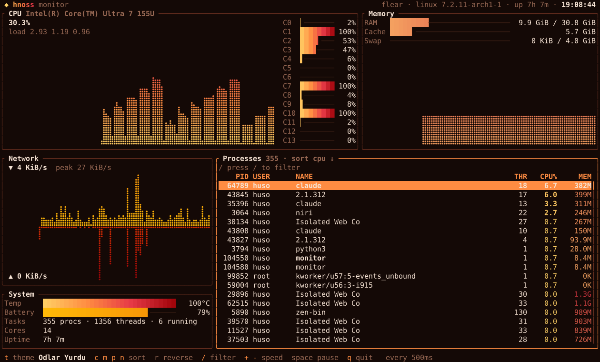
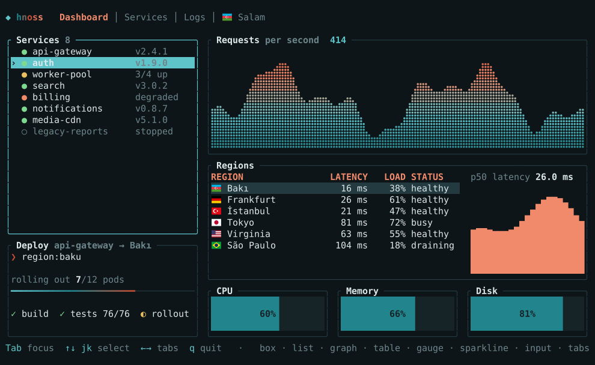
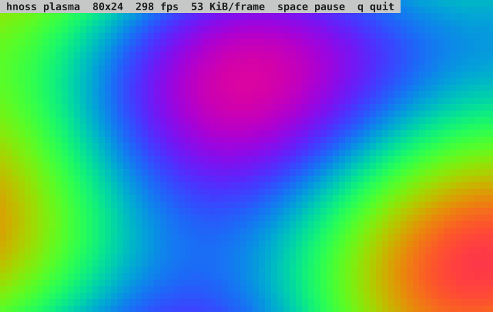
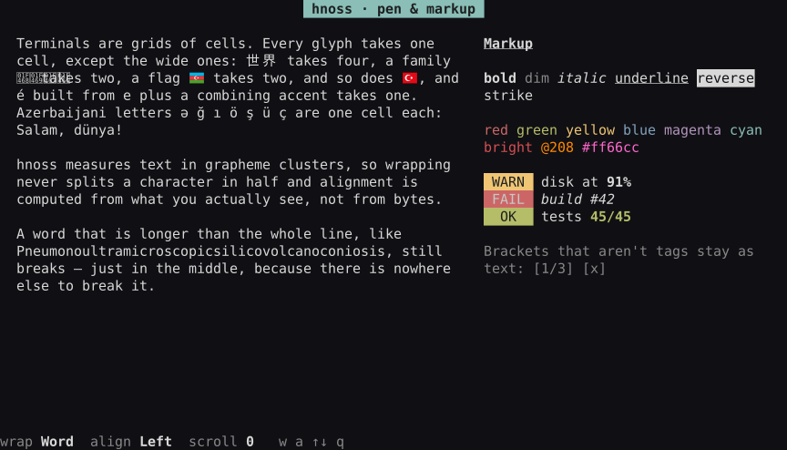
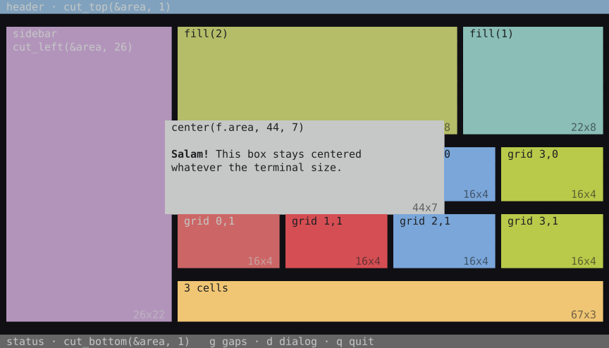
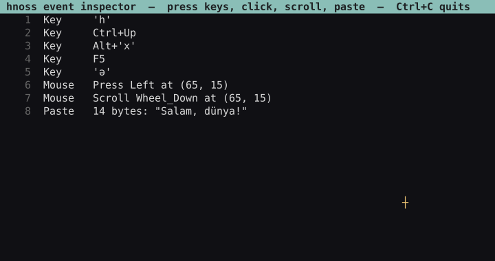
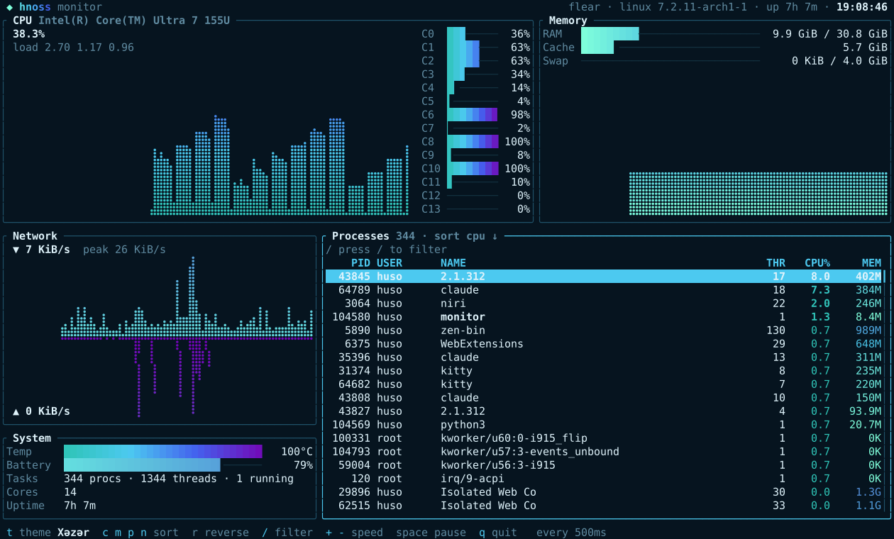

An immediate-mode terminal UI library for Odin. Pure Odin, no C, batteries included.

examples/monitor: a live system monitor reading /proc, theme Odlar Yurdu.
Describe the whole UI every frame; hnoss works out what changed and writes only that.
Only core: and base:. Raw syscalls on Linux, no ncurses, no termbox, no libc bindings.
Calling one draws it, handles its own keys and mouse, and returns what happened. State is yours.
Double-buffered diff, minimal cursor moves and SGR, synchronized output, one write per frame.
Unicode 16 widths and grapheme clusters: 世界, é, 👩💻, 🇦🇿 wrap and align correctly.
Raw mode, alt screen and cursor are restored on exit, panic, SIGINT, SIGTERM and crashes.
Allocators are parameters; per-frame scratch lives in context.temp_allocator. No hidden globals.
Every image is the real program, captured with tools/ansi_svg.py.

Tabs, markup list, braille graph, table, gauges, sparkline, input. run showcase

Every cell changes every frame; the diff keeps it smooth. run plasma

Word wrap by grapheme, alignment, [b red]markup[/]. run text

Edge cuts, proportional split, grid, centered dialog. run layout

Keyboard, mouse and focus handled for you. run w_list

Keys with modifiers, SGR mouse, bracketed paste. run event_inspector

One assignment restyles everything. The monitor in Xəzər.
import hnoss "hnoss"
main :: proc() {
term, _ := hnoss.init(hnoss.DEFAULT_OPTIONS + {.Mouse_Capture})
defer hnoss.deinit(&term)
cities := []string{"Bakı", "Gəncə", "Şəki", "Lənkəran"}
list: hnoss.List_State
events: []hnoss.Event
for {
f := hnoss.begin_frame(&term)
ui := hnoss.ui(f, events)
inner := hnoss.box(ui, hnoss.inset(f.area, 1), "🇦🇿 [b]Cities[/]")
hnoss.focus(ui, &list)
hnoss.list(ui, inner, cities, &list) // ↑↓, click, wheel
for ev in hnoss.unhandled(ui) {
if hnoss.is_char(ev, 'q') { return }
}
hnoss.end_frame(&term) // diff, one write
free_all(context.temp_allocator)
events = hnoss.poll_events(&term, -1)
}
}Next: the guide walks through the frame loop, text, layout and widgets.